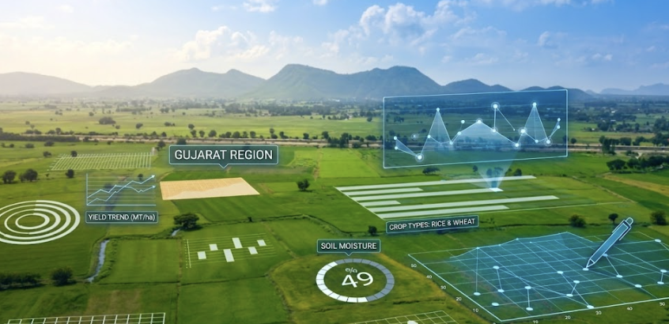

Farm Insights Services
Full-scale market research tailored specifically to rural demographics. We track and contextualize local agronomical habits and seasonal crop inputs to solve growth bottlenecks.
Inquire InsightsWe help agribusinesses and crop science innovators transform. Field Tabs partners with industry leaders to identify where field intelligence creates real value, design the right survey methodology, and deliver certified ground truths. From first principles to final deployment.

We provide full-service marketing research specializing in the agricultural sector. Our operations translate soil dynamics, crop health, and retail supply chains into actionable enterprise growth strategies.
"Field agricultural research demands deep local trust, specific agronomic degrees, and rigorous validation. Field Tabs was built from the ground up to solve these three field execution challenges."
Field Tabs is guided by seasoned agronomists and market research directors. Our leadership team brings decades of experience from the world's top crop science and agribusiness firms.
Tarun leads the operational vision and research design at Field Tabs. With a career spanning over 25 years, he possesses a deep mastery of agricultural sourcing, agrochemical marketing, and syndicated market research across South Asia.
Director & Founder. Spearheading agricultural research panels, digital crop surveys, and custom CCE programs for enterprise partners.
Director of India Syndicated Services & Real Time Trackers. Managed regional agribusiness research trackers for the global leader in agricultural market intelligence.
Assistant Vice President & Head of Agrochemicals Business. Led raw materials sourcing and strategic business development.
Associate Zonal Manager & AGM (Marketing & Materials). Directed strategic raw/packaging material sourcing, localized seeds marketing campaigns, and regional crop protection sales.
Sr. Product Development Manager & Area Sales Manager. Led national vegetable hybrid launches, distributor mapping, and direct farm level campaigns.
Veterinary Service Officer. Managed veterinary medicine sales and localized feed supplement distribution channels.
From precision agricultural mapping to call center feedback panels, we design customized field programs tailored to the modern agro-enterprise.
Full-scale market research tailored specifically to rural demographics. We track and contextualize local agronomical habits and seasonal crop inputs to solve growth bottlenecks.
Inquire InsightsAdvanced primary field surveys powered by customized tablet applications. All surveyors have agriculture degrees and undergo rigorous field validation to ensure zero-fault reporting.
Request CredentialsDedicated telephone support manned by certified agricultural experts. We provide localized agronomic advisory and capture rapid crop feedback across regional dialects.
Connect AdvisoryField Tabs started its journey in 2010 with a small group of agronomists operating from our headquarters in New Delhi. Over the years, we have systematically expanded our field presence to encompass all agricultural corridors of India, Nepal, and South Asia.
Beginning as a dedicated field data collection partner for local agencies, we quickly earned a reputation for precision and strict quality standards. This support allowed us to pivot to complete consultative market mapping and crop insurance auditing.
Today, we integrate digital surveys, GPS tracking, and localized call-centers to verify every single interview, giving global agribusinesses absolute clarity over rural markets.
Please provide details about your agricultural research requirements. Our team will contact you within 24 hours.
Our operational offices span key rural centers, coordinating research where decisions are made.
Barakhamba Road, Connaught Place, New Delhi, 110001, India
+91 11 4154 8976
contact@fieldtabs.com